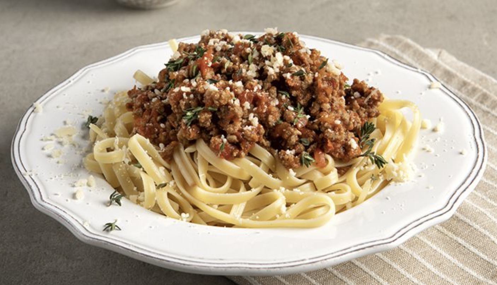

Spaghetti with Ground Beef

Description
This classic spaghetti recipe is made with a rich and flavorful meat sauce using ground beef.
Layered with hearty pasta and topped with parmesan cheese, this dish is
perfect for a comforting family meal and can be easily doubled for leftovers.
Ingredients
- Meat: Ground beef for a rich, hearty sauce.
- Onion and garlic: An onion and two cloves of garlic add depth and flavor to the sauce.
- Tomato products: You'll need a can of crushed tomatoes, a can of tomato sauce, and a can of tomato paste.
- Sugar: A tablespoon of white sugar enhances the natural sweetness of the tomatoes.
- Spices and seasonings: Fresh parsley, dried basil leaves, salt, Italian seasoning, and black pepper.
- Spaghetti: Use your favorite brand of spaghetti noodles.
- Cheese: Grated parmesan cheese to sprinkle on top.
Steps
- Make the meat sauce: Cook ground beef with onions and garlic until browned. Add tomato products, sugar, and seasonings. Simmer for 30 minutes.
- Cook the spaghetti according to the package instructions.
- Toss the cooked spaghetti with the meat sauce.
- Serve hot, topped with grated parmesan cheese.
- Enjoy your delicious spaghetti with ground beef!